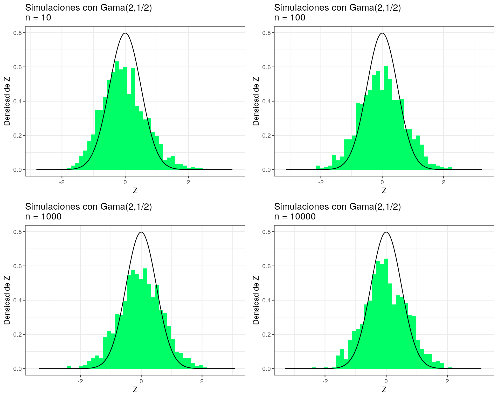

Distribución Gaussiana (alias ‘La Normal’)
Rodrigo Zepeda

1 Deducción del Modelo
Pensemos que estamos midiendo la posición de las estrellas en el cielo. Para ello hay dos formas.
Bajo coordenadas cartesianas \((x,y)\) pensemos que el error de medición es independiente; es decir, si \(\rho(x,y)\) es la densidad conjunta de los errores en cada coordenada entonces:
\[ \rho (x,y) = f_X(x) f_Y(y) \]
Podemos asumir que los errores de medición tienen la misma distribución en la coordenada \(x\) que la coordenada \(y\):
\[ \rho (x,y) = f_X(x) f_X(y) \]
Por otro lado, supongamos que existe también una representación en coordenadas polares de la posición de la estrella: \[ p (r, \theta) = g_R(r) \]
donde el error de medición depende sólo del radio \(R\) (no del ángulo).
Notamos entonces que:
\[ f_X(x) f_X(y) = g_R\Big( \sqrt{x^2 + y^2} \Big) \] donde sustituimos \(r\) por su definición en coordenadas polares. Si tomamos \(y = 0\) tenemos que \(f_X(x) f_X(0) = g_R(x)\) (a partir de aquí supondré \(x > 0\); los otros casos son similares). A partir de esa expresión se tiene que:
\[ f_X(\sqrt{x^2 + y^2} ) f_X(0) = g_R(\sqrt{x^2 + y^2} ) \]
Podemos entonces sustituir:
\[ f_X(x) f_X(y) = f_X(\sqrt{x^2 + y^2} ) f_X(0) \]
y dividimos entre \(f_X(0)^2\) para normalizar:
\[ \dfrac{f_X(x) \cdot f_X(y)}{f_X(0)\cdot f_X(0)} = \dfrac{f_X\Big( \sqrt{x^2 + y^2} \Big) }{f_X(0)} \]
Tomamos logaritmo: \[ \ln \Big(\dfrac{f_X(x)}{f_X(0)}\Big) + \ln \Big(\dfrac{f_X(y)}{f_X(0)}\Big) = \ln \Bigg( \dfrac{f_X\Big( \sqrt{x^2 + y^2} \Big) }{f_X(0)} \Bigg) \]
Si reescribimos \(h(x) = \ln \Big(\dfrac{f_X(x)}{f_X(0)}\Big)\) tenemos entonces que el problema es hallar una función \(h\) tal que:
\[ h(x) + h(y) = h\Big(\sqrt{x^2+y^2}\Big) \]
Pensando que dicha función es diferenciable podríamos buscarla haciendo:
\[ \dfrac{\partial}{\partial x} \Big[ h(x) + h(y) \Big] = \dfrac{\partial}{\partial x} h\Big(\sqrt{x^2+y^2}\Big) \]
De donde obtenemos:
\[ h'(x) = h'(\sqrt{x^2 + y^2}) \dfrac{x}{\sqrt{x^2+y^2}} \]
Notamos entonces que:
\[ \dfrac{h'(x)} {h'(\sqrt{x^2 + y^2})}= \dfrac{x}{\sqrt{x^2+y^2}} \]
Por lo cual, una propuesta para \(h'(x) = \alpha x\) para alguna \(\alpha\) (no es la única solución al problema, de hecho hay infinitas) y se sigue que \(h(x) = \alpha x^2/2 + C\). La constante debe ser cero pues se tiene que:
\[ \underbrace{h(x) + h(y)}_{ \alpha x^2/2 + \alpha y^2/2 + 2C} = \underbrace{h\Big(\sqrt{x^2+y^2}\Big)}_{ \alpha(x^2+y^2)/2 + C} \]
Al sustituir se tiene que:
\[ \ln \Big( \dfrac{f_X(x)}{f_X(0)} \Big)= \dfrac{\alpha x^2}{2} \]
de donde despejamos y obtenemos:
\[ f_X(x) = \frac{1}{f_X(0)} e^{\frac{\alpha x^2 }{2}} \]
Finalmente sabemos que para ser densidad debe integrar a \(1\) y ser positiva (por tanto \(f_X(0) > 0\)) por tanto esto fuerza a \(\alpha\) a ser negativo. En particular tomaremos \(\alpha = -1\) por ser el negativo más sencillo para este problema (pudo haber sido cualquier otro negativo).
\[ f_X(x) = \frac{1}{f_X(0)} e^{-\frac{1}{2} x^2} \]
Y para que integre a \(1\): \[ 1 = \int\limits_{-\infty}^{\infty} f_X(x) dx = \frac{1}{f_X(0)} \int\limits_{-\infty}^{\infty} e^{-\frac{1}{2} x^2} dx \]
Por tanto \(f_X(0) = \int\limits_{-\infty}^{\infty} e^{-\frac{1}{2} x^2} dx\). La siguiente sección se dedica a evaluar dicha integral.
2 Integración de la gaussiana
De la sección anterior notamos que sólo nos falta por integrar:
\[ \int\limits_{-\infty}^{\infty} e^{-\frac{1}{2} x^2} dx \]
la cual puede reescribirse como:
\[ 2 \int\limits_{0}^{\infty} e^{-\frac{1}{2} x^2} dx \]
Por lo que la integral a resolver en este caso es \(\int\limits_{0}^{\infty} e^{-\frac{1}{2} x^2} dx\). Para ello definiremos una función auxiliar \(g\) que nos ayudará en el proceso de integración:
\[ g(t) = \Big[ \int\limits_{0}^{t} e^{-\frac{1}{2} x^2} dx \Big]^2 \]
Notamos que:
\[ \lim_{t \to \infty} \sqrt{g(t)} = \int\limits_{0}^{\infty} e^{-\frac{1}{2} x^2} dx \]
De donde toda nuestra atención se enfocará en ese límite. Para resolverlo utilizaremos el truco de Feynman una técnica que no se estudia en las clases tradicionales de Cálculo1.
La derivada de \(g\) está dada por:
\[ \dfrac{dg}{dt} = 2 \Bigg[ \int\limits_{0}^{t} e^{-x^2/2}dx \Bigg] e^{-t^2/2} = 2 \int\limits_{0}^{t} e^{-(t^2+x^2)/2}dx \]
Hacemos el cambio de variable \(u = x/t\) lo que implica que \(x = ut\) y que \(dx = tdu\) donde además cuando \(x \in (0,t)\) entonces \(u \in (0,1)\):
\[ \dfrac{dg}{dt} = 2 \int\limits_{0}^{1} t e^{-(1+u^2)t^2 /2}du \]
Notamos que:
\[ \dfrac{\partial}{\partial t} \Bigg[ - \dfrac{2e^{-(1+u^2)t^2/2}}{1+u^2} \Bigg] = 2te^{-(1+u^2)t^2/2} \]
En resumen:
\[ \dfrac{dg}{dt} = \int\limits_{0}^{1} \dfrac{\partial}{\partial t} \Bigg[ - \dfrac{2e^{-(1+u^2)t^2/2}}{1+u^2} \Bigg] du = \dfrac{d}{d t} \int\limits_{0}^{1} \Bigg[ - \dfrac{2e^{-(1+u^2)t^2/2}}{1+u^2} \Bigg] du \]
Por tanto, mediante integración obtenemos que:
\[ g(t) = \int\limits_{0}^{1} \Bigg[ - \dfrac{2e^{-(1+u^2)t^2/2}}{1+u^2} \Bigg] du + C \]
Para determinar la constante de integración \(C\) observamos que si \(t \to 0\) se tiene:
\[ \lim_{t\to 0} g(t) = \Big[ \int\limits_{0}^{0} e^{-\frac{1}{2} x^2} dx \Big]^2 = 0 \]
Mientras que por otro lado:
\[\begin{equation} \begin{aligned} \lim_{t\to 0} g(t) &= \lim_{t\to 0} \int\limits_{0}^{1} \Bigg[ - \dfrac{2e^{-(1+u^2)t^2/2}}{1+u^2} \Bigg] du + C \\ & = \lim_{t\to 0} -2 \int\limits_{0}^{1} \Bigg[ \dfrac{1}{1+u^2} \Bigg] du + C \\ & = -2\arctan(u)\Bigg|_{u = 0}^{u = 1} + C \\ & = -2 \dfrac{\pi}{4} + C \end{aligned} \end{equation}\]
Por tanto, \(C = \pi/2\). Finalmente, \(g(t) = \int\limits_{0}^{1} \Bigg[ - \dfrac{2e^{-(1+u^2)t^2/2}}{1+u^2} \Bigg] du + \dfrac{\pi}{2}\). Por otro lado, notamos que:
\[ \lim_{t \to \infty} g(t) = \int\limits_{0}^{1} \Bigg[ - \lim_{t \to \infty} \dfrac{2e^{-(1+u^2)t^2/2}}{1+u^2} \Bigg] du + \dfrac{\pi}{2} = \dfrac{\pi}{2} \]
Por lo cual: \[ \lim_{t \to \infty} \sqrt{g(t)} = \int\limits_{0}^{\infty} e^{-\frac{1}{2} x^2} dx = \sqrt{\dfrac{\pi}{2}} \]
De donde:
\[ \int\limits_{-\infty}^{\infty} e^{-\frac{1}{2} x^2} dx = \sqrt{2 \pi} \] Concluimos entonces que \(f_X(0) = \sqrt{2 \pi}\) lo cual nos permite definir la distribución normal estándar:
Modelo [ Normal Estándar ]
A partir de un cambio de variable podemos definir el modelo \(\text{Normal}(\mu,\sigma^2)\) en general:
Teorema 1 [ Normal($\mu,\sigma$) ]
Modelo [ Normal($\mu,\sigma$) ]
La normal se ve así:

3 Funciones generadoras, valor esperado y otras propiedades
3.1 Valor esperado y varianza
Podemos utilizar que cualquier variable aleatoria normal \(X\sim\text{Normal}(\mu,\sigma^2)\) puede escribirse como: \[ X = \sigma Z + \mu \] donde \(Z\sim\text{Normal(0,1)}\) es una normal estándar. A través de propiedades de valor esperado podemos ver que:
\[\begin{equation} \begin{aligned} \mathbb{E}[X] & = \sigma \cdot \mathbb{E}[Z] + \mu \\ \text{Var}[X] & = \sigma^2 \cdot \text{Var}[Z] \end{aligned} \end{equation}\]
Basta entonces con calcular \(\mathbb{E}[Z]\) y \(\text{Var}[Z]\): \[\begin{equation} \begin{aligned} \mathbb{E}[Z] & = \int\limits_{-\infty}^{\infty} z f_Z(z) dz \\ & = \int\limits_{-\infty}^{\infty} z \dfrac{1}{\sqrt{2\pi}} e^{-\frac{z^2}{2}} dz \\ & = 2 \int\limits_{0}^{\infty} z \dfrac{1}{\sqrt{2\pi}} e^{-\frac{z^2}{2}} dz \\ & = 2 \int\limits_{0}^{\infty} \dfrac{1}{\sqrt{2\pi}} e^{-u} du \\ & = 0. \end{aligned} \end{equation}\] donde hicimos el cambio de variable \(u = \frac{z^2}{2}\) y \(du = zdz\)
Por otro lado, bajo el cambio de variable \(u = z\), \(dv = z e^{-\frac{z^2}{2}}dz\) con \(du = dz\) y \(v = - e^{-\frac{z^2}{2}}\) podemos calcular la varianza:
\[\begin{equation} \begin{aligned} \text{Var}[Z] & = \int\limits_{-\infty}^{\infty} z^2 f_Z(z) dz \\ & = \int\limits_{-\infty}^{\infty} z^2 \dfrac{1}{\sqrt{2\pi}} e^{-\frac{z^2}{2}} dz \\ & = \dfrac{1}{\sqrt{2\pi}} \Bigg[ \underbrace{- z e^{-\frac{z^2}{2}} \bigg|_{z=0}^{z=\infty}}_{uv} + \underbrace{\int\limits_{-\infty}^{\infty} e^{-\frac{z^2}{2}} dz}_{\int v du} \Bigg] \\ & = \underbrace{\int\limits_{-\infty}^{\infty} \dfrac{1}{\sqrt{2\pi}} e^{-\frac{z^2}{2}} dz }_{\text{Densidad Normal}(0,1)}¸\\ & = 1 \end{aligned} \end{equation}\]
Al combinar los resultados anteriores podemos concluir el siguiente teorema:
Teorema 2 [ Media y varianza de una normal ]
3.2 Moda
La moda se define como el valor \(x\) donde la densidad alcanza su máximo en el caso de las continuas. Para la \(\text{Normal}(\mu,\sigma^2)\), buscamos el valor que maximiza: \[ f_X(x) = \dfrac{1}{\sqrt{2\pi\sigma^2}}e^{-\frac{(x-\mu)^2}{2\sigma^2}} \] Como la función es diferenciable, derivamos e igualamos a \(0\). Nos podemos ahorrar el \(\frac{1}{\sqrt{2\pi\sigma^2}}\) por ser una constante positiva:
\[ f'_X(x) = - \frac{(x-\mu)}{\sigma^2}\cdot e^{-\frac{(x-\mu)^2}{2\sigma^2}} \]
de donde obtenemos \(x = \mu\). Para verificar que es un máximo comprobamos la convexidad en torno al punto:
\[ f''_X(x) = - \frac{e^{-\frac{(x-\mu)^2}{2\sigma^2}}}{\sigma^2} + \frac{(x-\mu)^2}{\sigma^4}\cdot e^{-\frac{(x-\mu)^2}{2\sigma^2}} \]
La convexidad cambia en \(\mu \pm \sigma^2\). En particular, dicha derivada en torno a \(x = \mu\) es negativa por lo cual es cóncava y se tiene que \(\mu\) es un máximo; por tanto:
Teorema 3 [ Moda de una normal ]
3.3 Función generadora de momentos
La función generadora de momentos para una \(\text{Normal}(\mu,\sigma)\) puede calcularse, también, a través de una \(\text{Normal}(0,1)\). Para ello sea \(X\sim \text{Normal}(\mu,\sigma)\) y escribamos \(X\) como \(X = \sigma Z + \mu\) donde \(Z\sim\text{Normal}(0,1)\). Entonces tenemos: \[ M_X(t) = \mathbb{E}[e^{tX}] = \mathbb{E}[e^{t(\sigma Z + \mu)}] = \mathbb{E}[e^{t\sigma Z}e^{t \mu}] = e^{t\mu} M_Z(\sigma t) \] donde \(M_Z\) es la función generadora de momentos de \(Z\). Calculamos entonces la de esta última:
\[\begin{equation} \begin{aligned} M_Z(\tau) & = \mathbb{E}[e^{tZ}] \\ & = \int\limits_{-\infty}^{\infty} e^{tz} \dfrac{1}{\sqrt{2\pi}}e^{-\frac{z^2}{2}} dz \\ & = \int\limits_{-\infty}^{\infty} \dfrac{1}{\sqrt{2\pi}}e^{tz-\frac{z^2}{2}} dz \\ & = \int\limits_{-\infty}^{\infty} \dfrac{1}{\sqrt{2\pi}}e^{-(\frac{z}{\sqrt{2}}-\frac{t}{\sqrt{2}})^2 +\frac{t^2}{2}}dz \\ & = e^{\frac{t^2}{2}}\int\limits_{-\infty}^{\infty} \underbrace{\dfrac{1}{\sqrt{2\pi}}e^{-\frac{(z-t)^2}{2}}}_{\text{Normal}(t,1)} dz \\ & = e^{\frac{t^2}{2}}. \end{aligned} \end{equation}\] Lo anterior nos permite concluir el teorema:
Teorema 4 [ Generadora de momentos de una normal ]
3.4 Mediana
Para encontrar la mediana de una variable aleatoria normal utilizaremos un teorema mucho más general que establece que, si una densidad es simétrica en torno a un valor \(m\) entonces \(m\) es la mediana. Esto lo podemos ver, intuitivamente, en la gráfica inferior con una densidad Laplace:
Lo cual nos inspira para el siguiente teorema:
Teorema 5 [ Mediana de simétricas ]
En particular, como una normal es simétrica en torno a \(\mu\) tenemos el siguiente teorema:
Teorema 6 [ Mediana de una normal ]
4 Teorema central del límite
Esta sección contiene sólo una introducción a un tema que nos dice por qué la normal es tan importante. Para ver esto, haremos un análisis de distribuciones conocidas. El proceso de simulación es el siguiente:
Tomaré una muestra aleatoria \(M_i = \{X_1, X_2,\dots,X_n \}\) de \(n\) variables aleatorias independientes todas con la misma distribución. Supongamos que dichas variables tienen media finita \(\mu\), varianza finita \(\sigma^2 > 0\) y su generadora de momentos existe para algún intervalo abierto.
Calcularé:
\[ Z_i(n) = \sqrt{n} \Big( \dfrac{1}{n}\sum\limits_{k=1}^{n} X_k - \mu \Big) \]
- Repetiré el proceso para \(i = 1,\dots, 1000\) y graficaré un histograma de dichas muestras. Notaremos que conforme aumentamos el tamaño de muestra \(n\), las \(Z_i\) se aproximan en distirbución a una normal con varianza \(\sigma^2\).
El siguiente código de R ejecuta las simulaciones:
TeoremaCentralLimite <- function(numero_simulaciones = 1000, n = c(10,100,1000,10000),
distribucion = rpois, mu = 1, sigma = 1, bins = 50,
ncol = 2, distname = "Poisson(1)",
rcolor = sample(rainbow(100),1), ...){
#Creamos
plot_list <- list()
for (k in n){
#Guardamos las Zi en un vector
Z <- rep(NA, numero_simulaciones)
#Simulamos todas las simulaciones
for (i in 1:numero_simulaciones){
simulaciones_X <- distribucion(n = k, ...)
Z[i] <- sqrt(k)*(sum(simulaciones_X/k) - mu)
}
#Graficación
x <- seq(min(Z)-1, max(Z) + 1, length.out = 1000)
y <- dnorm(x, sd = sigma)
plot_list <- list.append(
plot_list,
ggplot() +
geom_histogram(aes(x = Z, y = ..density..), bins = bins, fill = rcolor,
data = data.frame(Z = Z)) +
geom_line(aes_string(x = x, y = y), color = "black", data = data.frame(x = x, y = y)) +
ggtitle(paste0("Simulaciones con ", distname,"\nn = ", k)) +
xlab("Z") + ylab("Densidad de Z") +
theme_bw()
)
}
do.call("grid.arrange", c(plot_list, ncol = ncol))
}Para la Poisson:
TeoremaCentralLimite(lambda = 1, distname = "Poisson(1)")
Uniforme:
TeoremaCentralLimite(distribucion = runif, mu = 1/2, sigma = 1/12, distname = "Uniforme(0,1)")Exponencial
TeoremaCentralLimite(distribucion = rexp, mu = 1/5, sigma = 1/25, rate = 5, distname = "Exp(5)")
Gama:
TeoremaCentralLimite(distribucion = rgamma, mu = 1, sigma = 0.5, shape = 2, scale = 0.5, distname = "Gama(2,1/2)")
E inclusive la binomial
TeoremaCentralLimite(distribucion = rbinom, mu = 4.5, sigma = 2.475, size = 10, prob = 0.45, distname = "Binomial(10,0.45)")Observa que todas poco a poco empiezan a tomar una forma de una curva normal. Lo que está pasando es el Teorema Central del Límite. El cual nos indica que, cuando \(n \to \infty\)
\[ \lim_{n\to\infty} Z(n) = \lim_{n\to\infty} \sqrt{n} \Big( \dfrac{1}{n}\sum\limits_{k=1}^{n} X_k - \mu \Big) \sim \textrm{Normal}(0,\sigma^2) \]
Podemos reescribir esto en el siguiente teorema:
Teorema 7 [ Teorema del Límite Central ]
5 Distribución lognormal
5.1 Idea
5.2 Media y varianza
5.3 ¿Generadora de momentos?
Otra opción es usar integrales polares pero no necesariamente todos sabemos hacerlo.↩